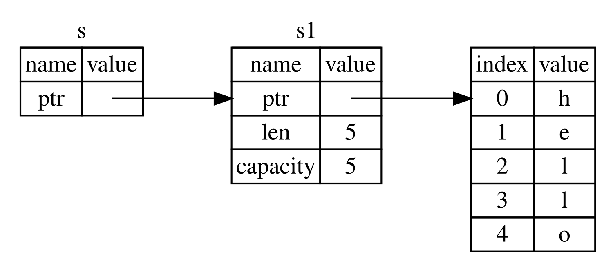

ارجاعات و قرض گرفتن (References and Borrowing)
مشکل کدی که در لیستینگ 4-5 با استفاده از تاپل وجود دارد این است که باید String را به تابع فراخوانیکننده بازگردانیم تا بعد از فراخوانی calculate_length بتوانیم همچنان از String استفاده کنیم، زیرا String به calculate_length منتقل شده است. در عوض، میتوانیم یک ارجاع به مقدار String ارائه دهیم. یک ارجاع مشابه یک اشارهگر (Pointer) است، به این معنا که یک آدرس است که میتوانیم از آن پیروی کنیم تا به دادههایی که در آن آدرس ذخیره شدهاند دسترسی پیدا کنیم؛ این دادهها متعلق به متغیر دیگری هستند. برخلاف اشارهگر (Pointer)، یک ارجاع تضمین میکند که به یک مقدار معتبر از نوع خاصی در طول عمر آن ارجاع اشاره میکند.
در اینجا نحوه تعریف و استفاده از یک تابع calculate_length آورده شده است که به جای گرفتن مالکیت مقدار، یک ارجاع به یک شی به عنوان پارامتر دارد:
fn main() {
let s1 = String::from("hello");
let len = calculate_length(&s1);
println!("The length of '{s1}' is {len}.");
}
fn calculate_length(s: &String) -> usize {
s.len()
}اول، توجه کنید که تمام کد مربوط به تاپل در اعلام متغیر و مقدار بازگشتی تابع حذف شده است. دوم، دقت کنید که ما &s1 را به calculate_length میدهیم و در تعریف آن، &String میگیریم به جای String. این علامتهای & نمایندهی ارجاعات هستند و به شما اجازه میدهند تا به مقداری اشاره کنید بدون اینکه مالکیت آن را بگیرید. شکل 4-6 این مفهوم را نشان میدهد.

شکل ۴-۶: نمودار &String با نام s که به String با نام s1 اشاره میکند
توجه: متضاد ارجاع دادن با استفاده از
&، عدم ارجاع است که با عملگر عدم ارجاع، یعنی*، انجام میشود. برخی از موارد استفاده از عملگر عدم ارجاع را در فصل 8 خواهیم دید و جزئیات مربوط به عدم ارجاع را در فصل 15 بحث خواهیم کرد.
بیایید نگاهی دقیقتر به فراخوانی تابع بیندازیم:
fn main() {
let s1 = String::from("hello");
let len = calculate_length(&s1);
println!("The length of '{s1}' is {len}.");
}
fn calculate_length(s: &String) -> usize {
s.len()
}سینتکس &s1 به ما اجازه میدهد یک ارجاع ایجاد کنیم که به مقدار s1 اشاره میکند اما مالک آن نیست. از آنجایی که ارجاع مالک آن نیست، مقداری که به آن اشاره میکند زمانی که ارجاع استفاده نمیشود حذف نخواهد شد.
به همین ترتیب، امضای تابع از & استفاده میکند تا نشان دهد که نوع پارامتر s یک ارجاع است. بیایید برخی توضیحات اضافه کنیم:
fn main() {
let s1 = String::from("hello");
let len = calculate_length(&s1);
println!("The length of '{s1}' is {len}.");
}
fn calculate_length(s: &String) -> usize { // s is a reference to a String
s.len()
} // Here, s goes out of scope. But because s does not have ownership of what
// it refers to, the String is not dropped.دامنهای که متغیر s در آن معتبر است، مشابه دامنهی هر پارامتر تابع است، اما مقدار اشارهشده توسط ارجاع زمانی که s استفاده نمیشود حذف نمیشود، زیرا s مالکیت ندارد. وقتی توابع ارجاعات را به جای مقادیر واقعی به عنوان پارامتر دارند، نیازی نخواهیم داشت مقادیر را بازگردانیم تا مالکیت را بازگردانیم، زیرا هرگز مالکیتی نداشتهایم.
ما عمل ایجاد یک ارجاع را قرض گرفتن مینامیم. همانند زندگی واقعی، اگر شخصی چیزی را مالک باشد، شما میتوانید آن را از او قرض بگیرید. وقتی کارتان تمام شد، باید آن را بازگردانید. شما مالک آن نیستید.
پس چه اتفاقی میافتد اگر بخواهیم چیزی که قرض گرفتهایم را تغییر دهیم؟ کد موجود در لیستینگ 4-6 را امتحان کنید. هشدار: این کار نمیکند!
fn main() {
let s = String::from("hello");
change(&s);
}
fn change(some_string: &String) {
some_string.push_str(", world");
}در اینجا خطا آورده شده است:
$ cargo run
Compiling ownership v0.1.0 (file:///projects/ownership)
error[E0596]: cannot borrow `*some_string` as mutable, as it is behind a `&` reference
--> src/main.rs:8:5
|
8 | some_string.push_str(", world");
| ^^^^^^^^^^^ `some_string` is a `&` reference, so it cannot be borrowed as mutable
|
help: consider changing this to be a mutable reference
|
7 | fn change(some_string: &mut String) {
| +++
For more information about this error, try `rustc --explain E0596`.
error: could not compile `ownership` (bin "ownership") due to 1 previous error
همانطور که متغیرها به صورت پیشفرض غیرقابل تغییر هستند، ارجاعات نیز به همین صورت هستند. ما اجازه نداریم چیزی که به آن ارجاع داریم را تغییر دهیم.
ارجاعات متغیر
ما میتوانیم کد موجود در لیستینگ 4-6 را طوری اصلاح کنیم که به ما اجازه دهد یک مقدار قرض گرفته شده را تغییر دهیم، با چند تغییر کوچک که به جای آن از ارجاع متغیر استفاده کنیم:
fn main() {
let mut s = String::from("hello");
change(&mut s);
}
fn change(some_string: &mut String) {
some_string.push_str(", world");
}ابتدا s را به mut تغییر میدهیم. سپس یک ارجاع متغیر با &mut s ایجاد میکنیم، جایی که تابع change را فراخوانی میکنیم، و امضای تابع را بهروزرسانی میکنیم تا یک ارجاع متغیر با some_string: &mut String بپذیرد. این بسیار واضح میکند که تابع change مقدار قرض گرفته شده را تغییر خواهد داد.
ارجاعات متغیر یک محدودیت بزرگ دارند: اگر یک ارجاع متغیر به یک مقدار داشته باشید، نمیتوانید هیچ ارجاع دیگری به آن مقدار داشته باشید. این کد که تلاش میکند دو ارجاع متغیر به s ایجاد کند، ناموفق خواهد بود:
fn main() {
let mut s = String::from("hello");
let r1 = &mut s;
let r2 = &mut s;
println!("{r1}, {r2}");
}در اینجا خطا آورده شده است:
$ cargo run
Compiling ownership v0.1.0 (file:///projects/ownership)
error[E0499]: cannot borrow `s` as mutable more than once at a time
--> src/main.rs:5:14
|
4 | let r1 = &mut s;
| ------ first mutable borrow occurs here
5 | let r2 = &mut s;
| ^^^^^^ second mutable borrow occurs here
6 |
7 | println!("{r1}, {r2}");
| -- first borrow later used here
For more information about this error, try `rustc --explain E0499`.
error: could not compile `ownership` (bin "ownership") due to 1 previous error
این خطا میگوید که این کد نامعتبر است زیرا نمیتوانیم s را به طور همزمان بیش از یک بار به صورت متغیر قرض بگیریم. اولین قرض متغیر در r1 است و باید تا زمانی که در println! استفاده شود باقی بماند، اما بین ایجاد آن ارجاع متغیر و استفاده از آن، ما سعی کردیم یک ارجاع متغیر دیگر در r2 ایجاد کنیم که همان دادهای را قرض میگیرد که r1 نیز قرض گرفته است.
محدودیتی که از ایجاد چند ارجاع متغیر به دادههای یکسان به طور همزمان جلوگیری میکند، امکان تغییر دادهها را فراهم میکند اما به صورت بسیار کنترل شده. این چیزی است که تازهکاران زبان Rust ممکن است با آن مشکل داشته باشند زیرا اکثر زبانها به شما اجازه میدهند هر زمان که بخواهید دادهها را تغییر دهید. مزیت این محدودیت این است که Rust میتواند از مسابقات داده (data race) در زمان کامپایل جلوگیری کند. یک مسابقه داده مشابه یک شرایط مسابقه (race condition) است و زمانی رخ میدهد که این سه رفتار اتفاق بیفتند:
- دو یا چند اشارهگر (Pointer) به طور همزمان به دادههای یکسان دسترسی پیدا میکنند.
- حداقل یکی از اشارهگر (Pointer)ها برای نوشتن در دادهها استفاده میشود.
- هیچ مکانیزمی برای هماهنگ کردن دسترسی به دادهها استفاده نمیشود.
مسابقات داده باعث رفتار نامشخص میشوند و در زمان اجرای برنامه ممکن است یافتن و رفع آنها دشوار باشد؛ Rust با عدم کامپایل کدهای دارای مسابقات داده از این مشکل جلوگیری میکند!
همانطور که همیشه، میتوانیم از آکولادها برای ایجاد یک اسکوپ جدید استفاده کنیم که امکان وجود ارجاعات متغیر متعدد را فراهم میکند، اما نه به صورت همزمان:
fn main() {
let mut s = String::from("hello");
{
let r1 = &mut s;
} // r1 goes out of scope here, so we can make a new reference with no problems.
let r2 = &mut s;
}Rust یک قانون مشابه برای ترکیب ارجاعات متغیر و غیرمتغیر اعمال میکند. این کد منجر به خطا میشود:
fn main() {
let mut s = String::from("hello");
let r1 = &s; // no problem
let r2 = &s; // no problem
let r3 = &mut s; // BIG PROBLEM
println!("{r1}, {r2}, and {r3}");
}در اینجا خطا آورده شده است:
$ cargo run
Compiling ownership v0.1.0 (file:///projects/ownership)
error[E0502]: cannot borrow `s` as mutable because it is also borrowed as immutable
--> src/main.rs:6:14
|
4 | let r1 = &s; // no problem
| -- immutable borrow occurs here
5 | let r2 = &s; // no problem
6 | let r3 = &mut s; // BIG PROBLEM
| ^^^^^^ mutable borrow occurs here
7 |
8 | println!("{r1}, {r2}, and {r3}");
| -- immutable borrow later used here
For more information about this error, try `rustc --explain E0502`.
error: could not compile `ownership` (bin "ownership") due to 1 previous error
ای وای! ما همچنین نمیتوانیم یک ارجاع متغیر داشته باشیم در حالی که یک ارجاع غیرمتغیر به همان مقدار داریم.
کاربرانی که از یک ارجاع غیرمتغیر استفاده میکنند، انتظار ندارند که مقدار به طور ناگهانی تغییر کند! با این حال، چندین ارجاع غیرمتغیر مجاز هستند زیرا هیچکسی که فقط دادهها را میخواند، نمیتواند خواندن دیگران را تحت تأثیر قرار دهد.
توجه داشته باشید که اسکوپ یک ارجاع از جایی که معرفی میشود شروع شده و تا آخرین باری که از آن استفاده میشود ادامه دارد. به عنوان مثال، این کد کامپایل میشود زیرا آخرین استفاده از ارجاعات غیرمتغیر در println! است، قبل از اینکه ارجاع متغیر معرفی شود:
fn main() {
let mut s = String::from("hello");
let r1 = &s; // no problem
let r2 = &s; // no problem
println!("{r1} and {r2}");
// Variables r1 and r2 will not be used after this point.
let r3 = &mut s; // no problem
println!("{r3}");
}اسکوپهای ارجاعات غیرمتغیر r1 و r2 بعد از println! که در آنجا آخرین بار استفاده شدهاند به پایان میرسند، که این قبل از ایجاد ارجاع متغیر r3 است. این اسکوپها همپوشانی ندارند، بنابراین این کد مجاز است: کامپایلر میتواند تشخیص دهد که ارجاع دیگر در نقطهای قبل از پایان اسکوپ استفاده نمیشود.
حتی اگر خطاهای قرض گرفتن ممکن است گاهی اوقات ناامیدکننده باشند، به یاد داشته باشید که این کامپایلر Rust است که به شما نشان میدهد یک باگ بالقوه در اوایل (در زمان کامپایل به جای زمان اجرا) وجود دارد و دقیقا به شما میگوید مشکل کجاست. سپس نیازی نیست که پیگیری کنید چرا دادههای شما آن چیزی نیست که فکر میکردید.
ارجاعات آویزان
در زبانهایی که از اشارهگر (Pointer)ها استفاده میکنند، ایجاد اشتباه یک اشارهگر (Pointer) آویزان آسان است—اشارهگر (Pointer)ی که به مکانی در حافظه اشاره میکند که ممکن است به شخص دیگری داده شده باشد—با آزاد کردن مقداری حافظه در حالی که اشارهگر (Pointer) به آن حافظه را حفظ میکنید. در Rust، برعکس، کامپایلر تضمین میکند که ارجاعات هرگز ارجاعات آویزان نخواهند بود: اگر به دادههایی ارجاع دارید، کامپایلر اطمینان میدهد که دادهها قبل از ارجاع به دادهها از محدوده خارج نمیشوند.
بیایید سعی کنیم یک ارجاع آویزان ایجاد کنیم تا ببینیم چگونه Rust با یک خطای زمان کامپایل از این اتفاق جلوگیری میکند:
fn main() {
let reference_to_nothing = dangle();
}
fn dangle() -> &String {
let s = String::from("hello");
&s
}در اینجا خطا آورده شده است:
$ cargo run
Compiling ownership v0.1.0 (file:///projects/ownership)
error[E0106]: missing lifetime specifier
--> src/main.rs:5:16
|
5 | fn dangle() -> &String {
| ^ expected named lifetime parameter
|
= help: this function's return type contains a borrowed value, but there is no value for it to be borrowed from
help: consider using the `'static` lifetime, but this is uncommon unless you're returning a borrowed value from a `const` or a `static`
|
5 | fn dangle() -> &'static String {
| +++++++
help: instead, you are more likely to want to return an owned value
|
5 - fn dangle() -> &String {
5 + fn dangle() -> String {
|
For more information about this error, try `rustc --explain E0106`.
error: could not compile `ownership` (bin "ownership") due to 1 previous error
این پیام خطا به ویژگیای اشاره دارد که هنوز پوشش ندادهایم: طول عمرها (lifetimes). ما طول عمرها را به طور مفصل در فصل 10 مورد بحث قرار خواهیم داد. اما، اگر بخشهای مربوط به طول عمرها را نادیده بگیرید، پیام کلید مشکل این کد را بیان میکند:
this function's return type contains a borrowed value, but there is no value
for it to be borrowed from
بیایید نگاهی دقیقتر به آنچه که در هر مرحله از کد dangle اتفاق میافتد بیندازیم:
fn main() {
let reference_to_nothing = dangle();
}
fn dangle() -> &String { // dangle returns a reference to a String
let s = String::from("hello"); // s is a new String
&s // we return a reference to the String, s
} // Here, s goes out of scope and is dropped, so its memory goes away.
// Danger!از آنجا که s داخل dangle ایجاد میشود، زمانی که کد dangle تمام میشود، s از محدوده خارج میشود و آزاد میگردد. اما ما سعی کردیم یک ارجاع به آن برگردانیم. این بدان معناست که این ارجاع به یک String نامعتبر اشاره میکند. این خوب نیست! Rust اجازه نمیدهد این کار را انجام دهیم.
راهحل در اینجا این است که به جای آن String را به طور مستقیم برگردانید:
fn main() {
let string = no_dangle();
}
fn no_dangle() -> String {
let s = String::from("hello");
s
}این بدون هیچ مشکلی کار میکند. مالکیت به بیرون منتقل میشود و هیچ چیزی آزاد نمیشود.
قوانین ارجاعات
بیایید آنچه درباره ارجاعات بحث کردیم را مرور کنیم:
- در هر زمان مشخص، میتوانید یا یک ارجاع متغیر داشته باشید یا هر تعداد ارجاع غیرمتغیر.
- ارجاعات باید همیشه معتبر باشند.
در مرحله بعد، به نوع دیگری از ارجاع خواهیم پرداخت: بخشها (slices).